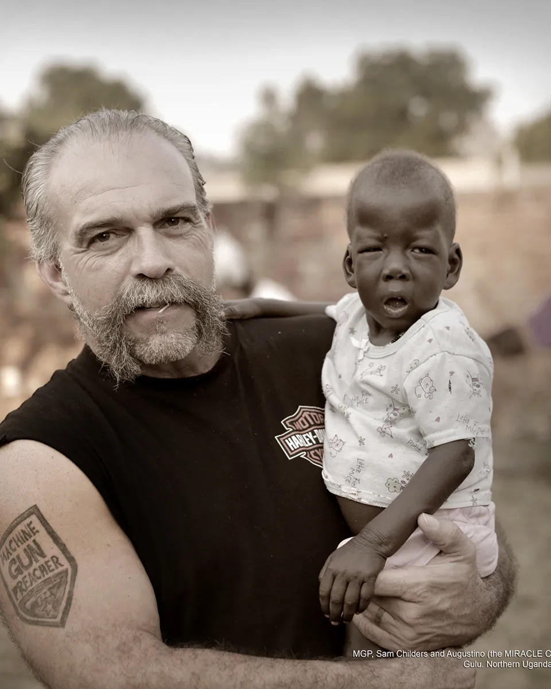
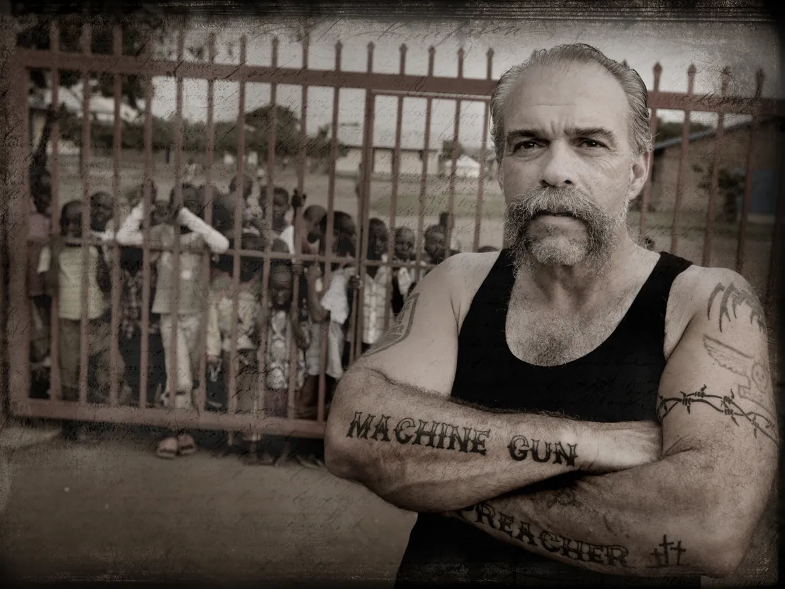
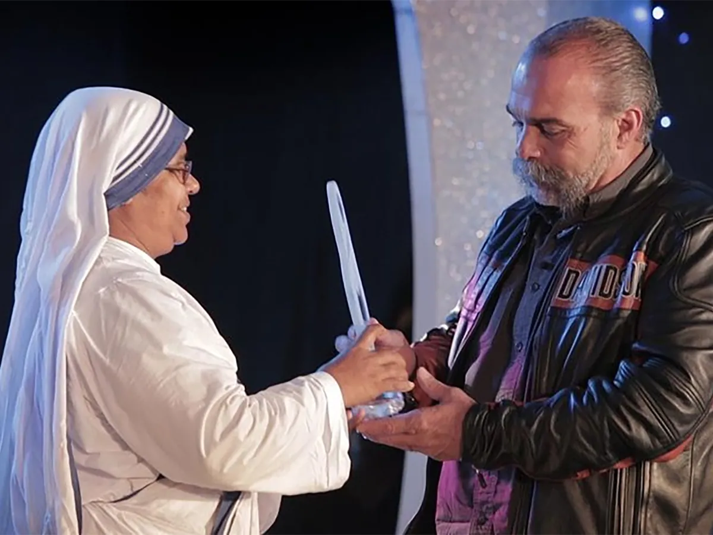
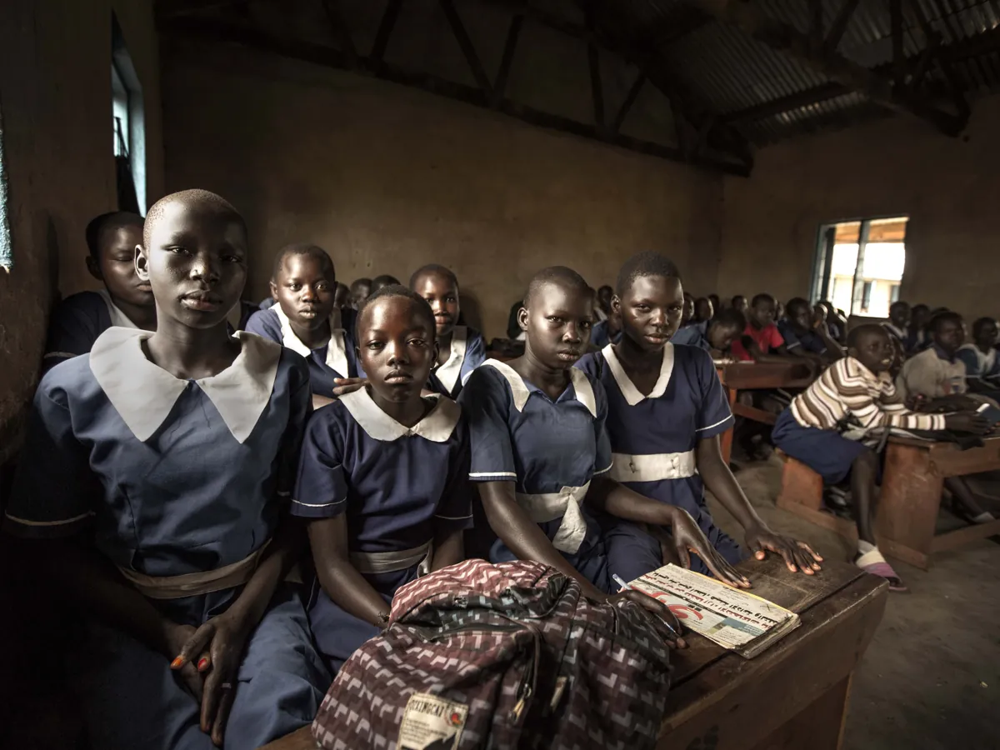
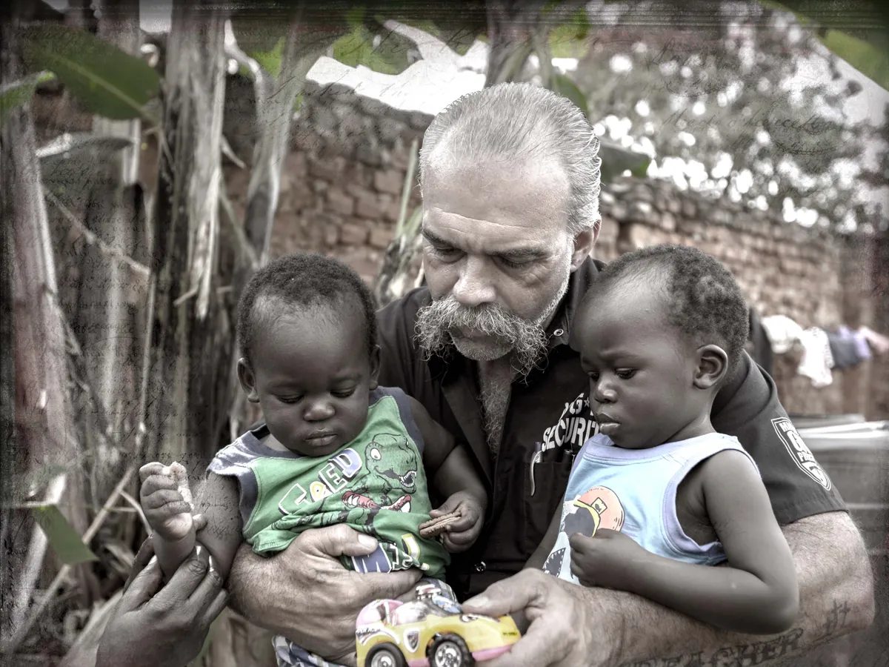

Der echte Machine Gun Preacher live in Kassel
Hollywood hat seine Geschichte mit Gerard Butler verfilmt. Am Samstag erzählt Sam Childers sie selbst – im Jesus Centrum Kassel, mit deutscher Übersetzung. Der Eintritt ist frei.
Die Veranstaltung hat stattgefunden – danke an alle, die da waren!

Vom Biker zum Retter von Kindern
Sam Childers war Drogendealer, Schläger und Biker in Pennsylvania – bis er sein Leben von Grund auf änderte. Ende der 1990er-Jahre reiste er zum ersten Mal in den Sudan. Was er dort sah, ließ ihn nicht mehr los: Kinder, die von Rebellen verschleppt und zu Soldaten gemacht wurden.
Seitdem hat er nach Angaben seines Teams nahezu 2.000 Kinder aus der Gewalt der Rebellen befreit. Seine Organisation Angels of East Africa sorgt heute rund um die Uhr für etwa 600 Kinder und junge Menschen in Ostafrika und gibt täglich rund 8.000 Mahlzeiten aus.
2011 kam seine Geschichte als Hollywood-Film „Machine Gun Preacher" mit Gerard Butler in die Kinos. 2013 erhielt er den internationalen Mutter-Teresa-Preis für soziale Gerechtigkeit.
Seine Geschichte
Wie aus einem Biker ein Mann wurde, der sein Leben für fremde Kinder aufs Spiel setzt.
Deine Fragen
Du kennst den Film? Frag nach, was echt ist und was Hollywood.
Aus Afrika
Neues aus den Kinderhäusern und Projekten in Ostafrika.
Persönlich
Nach dem Vortrag signiert Sam Bücher und steht für Fotos bereit.




Fotos: Machine Gun Preacher / Angels of East Africa, zur Verfügung gestellt für diese Veranstaltung.
Hilfe braucht Menschen, die hinfahren
Solar hilft! bringt Solaranlagen zu Gemeinden und Hilfseinrichtungen in Krisengebieten. Das erste Projekt versorgt seit April 2026 eine Flüchtlingshilfe in Zahlé im Libanon mit Strom. Sam Childers zeigt seit Jahrzehnten, was entsteht, wenn jemand nicht nur zusieht, sondern hinfährt – deshalb laden wir zu diesem Abend ein.
Gastgeber
Das Jesus Centrum Kassel öffnet für diesen Abend seine Türen – für alle, ob mit oder ohne Bezug zur Kirche.
Spenden des Abends
Alles, was am Abend gesammelt wird, geht vollständig an Sam Childers' Kinderhilfe Angels of East Africa.
Weitersagen
Kennst du jemanden, der den Film gesehen hat? Per WhatsApp einladen